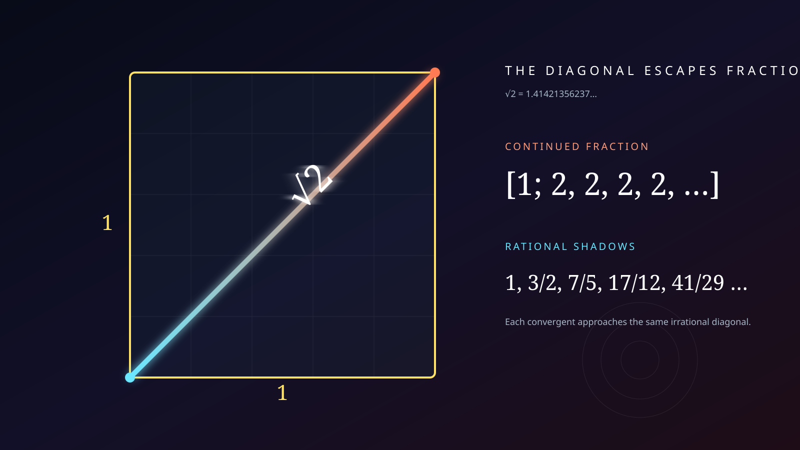
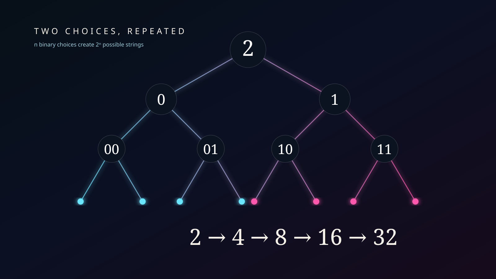

Split.
Pair. Double.
Five interactive machines expose the internal habits of 2—from parity and pairing to binary growth and the irrational diagonal √2.

The pairing chamber
Choose a number of objects. The machine groups them into pairs and shows whether anything is left over.
The parity detector
Every integer is either divisible by 2 or one step away from being divisible by 2.
The doubling engine
Move the exponent. Each step multiplies the previous power by exactly 2.
The binary translator
Translate a nonnegative decimal integer into base 2 and watch which powers-of-two positions switch on.
Approaching √2
Newton's method repeatedly averages x with 2/x. Starting from 1, the approximations rush toward √2.
The two-state switchboard
Eight bits can encode 256 different patterns. Change the decimal input in the translator and each lamp becomes a visible 0 or 1.

The museum now has three open number exhibits. Return to the atlas and move among them—or zoom out into the still-dark continuum waiting for future galleries.
Return to the number atlas →